Audit Summary
After reviewing the Foundry Agent Service Overview page, four diagrams are proposed to complement the existing content. The page currently has one diagram (agent components). These additions would significantly improve comprehension of the service architecture, development workflow, agent type selection, and security model.
- 4 diagrams proposed for insertion
- All follow Microsoft Fluent color theming
- Alt-text validated against Learn Contributors Guide (40-150 chars, starts with type, ends with period)
- Long descriptions provided for complex diagrams
1. Agent Service Architecture
Architecture
2. Development Lifecycle
Process Flow
3. Agent Types Decision Guide
Comparison
4. Enterprise Security Architecture
Security